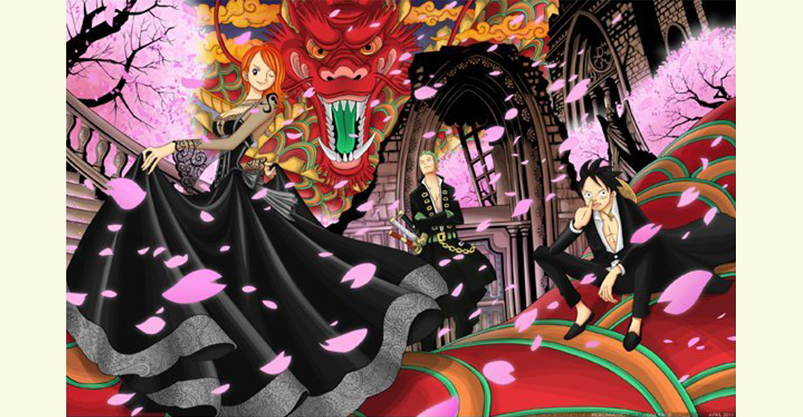

角色

【小賊貓】娜美（奈美）[NAMI]
特徵：極好的身材，左臂有風車和橘子樣的紋身，愛錢和橘子如命！（提到寶藏的時候眼睛就會變成$ $）
武器：完美版天候棒（原為天候棒）
特長：繪製地圖，觀測天氣，機敏的身手，處事冷靜極具判斷力，偷東西。

【草帽小子】蒙其·D·路飛（蒙其·D·魯夫）[MONKEY·D·LUFFY]
特徵：天真，戴草帽，戰鬥時草帽拿下來，左眼下方的疤痕（小時候為了證明自己擁有做海賊的勇氣自己劃的）大大的嘴始終展現著燦爛的笑容、好吃、白痴、講義氣。
特長：超人系惡魔果實能力者－橡皮果實！攻擊技能：、橡皮亂打、橡皮子彈、橡皮炸彈、橡皮鞭、橡皮戰斧、橡皮火箭、橡皮火箭炮、橡皮攻城炮、橡皮矛槍、橡皮鐮刀、橡皮鍾、橡皮鎚、橡皮棒、橡皮弩、橡皮網、橡皮風車、橡皮盾、橡皮氣球、橡皮大口吃、橡皮掃把腳、橡皮花火、橡皮印章、橡皮雨、橡皮火山爆發…

【海賊獵人】羅羅諾亞·索隆（羅羅諾亞·卓洛）[RORONOA·ZORO]
特徵：綠色頭髮，左耳戴三隻黃色露珠耳環，綠色的腰帶 ，腰帶上佩三把刀，左臂綁著綠色的頭巾（戴上意味著索隆認真作戰，戰鬥力劇增）超級路痴、講義氣 、願為朋友而死。
武器：和道一文字、雪走（在逃離司法島時在橋上被海軍本部上校銹銹果實能力者修恩所毀，剩餘的部分便葬恐怖三桅船Thriller Bark上）；三代鬼徹（擁有能讓敵人產生幻覺的「鬼氣」）
；黑刀秋水（在恐怖三桅船上打敗龍馬所得）。

【狙擊王】烏索普（騙人布）[USOPP]
愛好：發明各種東西、製造武器
特徵：繼承母親的長鼻子，格子頭巾，護目鏡，百寶袋，膽小。
特長：吹牛，逃跑，彈弓，射擊，畫畫，做偉大的製作。

【黑足】山治（香吉士 香吉）[SANJI]
特徵：黑色西裝；叼著煙；圈圈眉毛；長腿；對美女特別敏感（尤其是娜美，羅賓）；有騎士精神。
特長：做菜一級棒，讓敵人望而卻步的腿功和從未展現過的左眼。其招數「整形踢」可改變人的面部骨骼，使達到整形的效果。在迪巴魯篇中其效果最為明顯。不過此招數通常在極為憤怒的情況下才會使出。

【最愛吃棉花糖的寵物】托尼托尼·喬巴（東尼東尼·喬巴）[TonyTony·Chopper]
特徵：藍鼻子的馴鹿，吃了人人惡魔果實又可以像人一樣說話行走做事（仍可以與動物交流）；非常膽小，碰到事情是總是躲起來，可惜總是躲反（把身子躲到外側）。
特長：醫術，藍波球

【惡魔之子】妮可·羅賓（妮歌·魯賓）[NICO·ROBIN]
特徵：喜歡看書，看書時旁邊即使是狂風暴雨也動都不動，有一種神秘的氣質。 黑色長髮、藍黑相間的瞳孔(漫畫為紅色)。
特長：花花果實能力者，能使任何自己看得見的地方像花盛開般長出身體的任何部位（眼睛，手，腳等）；歷史學；暗殺。

【人造人】弗蘭奇（卡特·弗蘭姆、佛朗基）[CUTTER·FRANKY]
特徵：是一個熱衷於穿著三角泳褲的改造人，藍色飛機頭，鋼鐵的身體，黑色三角墨鏡，經常感動的彈吉他和流淚，說話捎帶一點老外調，以可樂為燃料，酷愛可樂。
特長：不光是修船技術高超，還懂建築。除背後渾身上下都是武器（因為自己夠不到後背）。

【鼻歌】布魯克[BROOK]
愛好：演奏，喝紅茶，說【骷髏冷笑話】，類似於：嚇的我的心臟都在狂跳，雖然我沒有心臟了……
特徵：雖然已變成了骷髏，但仍有一頭烏黑濃密的爆炸頭，身穿紳士裝，個性頗好色並搞笑，擁有著「喲嚯嚯嚯」的標誌性笑聲。
Copyright © 2024 MyGoPen Inc. 保留一切讓你拷貝權利。沒有銷售就沒有退款問題。
如有問題請使用以下管道反映,保證沒有人回應。